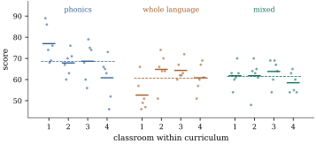

16.5 Nested factors
So far every level of one factor has appeared with every level of the other. Many studies are built differently. Pupils are taught in classrooms, and each classroom follows one curriculum. Specimens are cut from batches, and each batch comes from one supplier. Classroom 3 under one curriculum has nothing to do with classroom 3 under another: the factors are nested, not crossed. This section gives the decomposition for balanced nested layouts, explains why a nested factor has no main effect, and shows why the right denominator for the outer factor depends on what the inner levels represent.
16.5.1. Nested and crossed factors
Factor
The labels
with
16.5.2. The nested decomposition
With the observations stacked as in Section 16.1 (
Assume Eq. 16.5.1 for a
balanced nested layout with
(a) The four matrices Eq. 16.5.2 are mutually orthogonal projections summing to
(b) The sums of squares are
(c) The function
(d) The expected mean squares are
Proof.
(a) Ranks and symmetric idempotence follow from Lemma 16.1.1(b). The mixed-product rule gives
(b)
(c) By Theorem 8.2.2 the estimable functions are the linear combinations
(d) Apply Theorem 9.6.1 and Corollary 9.6.2 to the decomposition in (a). The vector
Part (a) is the precise sense in which a nested
factor “absorbs” the interaction. If nested data are
analysed as though crossed, with the local labels
More stages work the same way. With
import itertools
import numpy as np
def Jbar(k):
return np.full((k, k), 1.0 / k) # averaging: replaces a k-vector by its mean
def Cen(k):
return np.eye(k) - Jbar(k) # centring: subtracts the mean
def kron_all(mats):
out = np.ones((1, 1))
for A in mats:
out = np.kron(out, A)
return out
def factorial_projections(levels, m):
"""P_S for every subset S of the factors (a 0/1 tuple), and the error projection."""
P = {}
for S in itertools.product([0, 1], repeat=len(levels)):
P[S] = kron_all([Cen(l) if s else Jbar(l) for l, s in zip(levels, S)] + [Jbar(m)])
P["error"] = kron_all([np.eye(l) for l in levels] + [Cen(m)])
return P
def rank(A):
return int(round(np.trace(A))) # rank = trace for a projection
a, b, m = 3, 4, 2
PB_in_A = kron_all([np.eye(a), Cen(b), Jbar(m)]) # B within A
P2 = factorial_projections([a, b], m)
print("B(A) = B + AB of the crossed layout:", np.allclose(PB_in_A, P2[(0, 1)] + P2[(1, 1)]))
print("rank of B(A):", rank(PB_in_A), " = a(b-1) =", a * (b - 1))16.5.3. What the inner levels represent
The tests of Theorem 16.5.1(d)
treat the levels of
Often, though, the inner levels are a sample. The
classrooms in a curriculum study stand for all
classrooms that might follow that curriculum. Then the
question about
Seventy-two pupils took the same reading test after a
year in one of three reading curricula. Each curriculum
was followed in four classrooms, with six pupils tested
per classroom. The data are synthetic, generated by the
script nested_classrooms.py with random
classroom effects (standard deviation 4 points),
pupil-level noise (standard deviation 8), and curriculum
means differing by a few points. The classroom means
are
| curriculum | classroom 1 | classroom 2 | classroom 3 | classroom 4 | mean |
|---|---|---|---|---|---|
| phonics | 77.0 | 67.8 | 68.7 | 60.8 | 68.6 |
| whole language | 52.7 | 64.8 | 64.3 | 60.8 | 60.7 |
| mixed | 61.8 | 61.8 | 63.8 | 58.5 | 61.5 |
and the nested analysis of variance is
| Source | df | Sum of squares | Mean square |
|---|---|---|---|
| curriculum | 2 | 908.3 | 454.2 |
| classroom(curriculum) | 9 | 1445.8 | 160.6 |
| pupils (error) | 60 | 3063.3 | 51.1 |
Classrooms within curricula differ:
The listing checks by simulation which test to trust.
It generates

import numpy as np
from scipy import stats
a, b, m = 3, 4, 6
data_rng = np.random.default_rng(16_05)
curriculum_effect = np.array([3.0, -2.0, 0.0])
classroom_effect = data_rng.normal(scale=4.0, size=(a, b))
scores = np.round(62 + curriculum_effect[:, None, None] + classroom_effect[:, :, None]
+ data_rng.normal(scale=8.0, size=(a, b, m)))
def Jbar(k):
return np.full((k, k), 1.0 / k)
def Cen(k):
return np.eye(k) - Jbar(k)
y = scores.ravel() # pupils fastest, then classroom, then curriculum
P = {"curriculum": np.kron(np.kron(Cen(a), Jbar(b)), Jbar(m)),
"classroom(curriculum)": np.kron(np.kron(np.eye(a), Cen(b)), Jbar(m)),
"error": np.kron(np.kron(np.eye(a), np.eye(b)), Cen(m))}
ss = {k: y @ Pk @ y for k, Pk in P.items()}
df = {k: int(round(np.trace(Pk))) for k, Pk in P.items()}
ms = {k: ss[k] / df[k] for k in P}
for k in P:
print(f"{k:22s} df {df[k]:2d} SS {ss[k]:8.1f} MS {ms[k]:7.1f}")
F_cls = ms["classroom(curriculum)"] / ms["error"]
F_cur_fixed = ms["curriculum"] / ms["error"]
F_cur_random = ms["curriculum"] / ms["classroom(curriculum)"]
print(f"classrooms within curricula: F = {F_cls:.2f}, p = {stats.f.sf(F_cls, df['classroom(curriculum)'], df['error']):.3f}")
print(f"curricula against pupils: F = {F_cur_fixed:.2f}, p = {stats.f.sf(F_cur_fixed, 2, df['error']):.3f}")
print(f"curricula against classrooms: F = {F_cur_random:.2f}, p = {stats.f.sf(F_cur_random, 2, df['classroom(curriculum)']):.3f}")rng = np.random.default_rng(20260919)
reps = 20_000
Pc, Pb, Pe = P["curriculum"], P["classroom(curriculum)"], P["error"]
rej_fixed = rej_random = 0
for _ in range(reps):
sim = (rng.normal(scale=4.0, size=(a, b))[:, :, None] + rng.normal(scale=8.0, size=(a, b, m))).ravel()
msc, msb, mse = sim @ Pc @ sim / 2, sim @ Pb @ sim / 9, sim @ Pe @ sim / 60
rej_fixed += msc / mse > stats.f.ppf(0.95, 2, 60)
rej_random += msc / msb > stats.f.ppf(0.95, 2, 9)
print(f"no curriculum effect, random classrooms: rejection rate {rej_fixed / reps:.3f} "
f"against pupils, {rej_random / reps:.3f} against classrooms")Warning. The mistake of testing an outer factor against the within-level error, when the inner levels are a sample, is common enough to have a name, pseudoreplication (Hurlbert 1984). The pupils are not independent replicates of a curriculum. The classrooms are. With a fixed number of pupils, adding classrooms improves the curriculum comparison much more than adding pupils per classroom.
Nested and crossed structure are often combined, for example when every classroom is tested both before and after the year. The balanced decomposition is again a sum of Kronecker products, one for each meaningful term (Exercise (C2)). Unbalanced nested data lose the Kronecker structure, and random inner levels lead to the mixed models of Chapters 32 and 33 (Definition 32.2.1).
16.5.4. Exercises
A. Check your understanding
Say whether each pair of factors is crossed or nested, and if nested, which is inside which. (a) Four fertilizers applied to plots of each of three wheat varieties. (b) Two suppliers, each delivering five batches, with several specimens tested from each batch. (c) Hospitals within regions, with patients within hospitals. (d) Three laboratories, each measuring portions of the same six reference samples.
B. Practice
In a balanced nested layout, permute the local labels
Solution.
Show that
Solution. Let
For a three-stage nested layout (
C. Going deeper
In the balanced nested layout of Theorem 16.5.1,
let
Solution. The vector of
Suppose each classroom of Example (Curricula and classrooms)
is tested on two occasions (factor